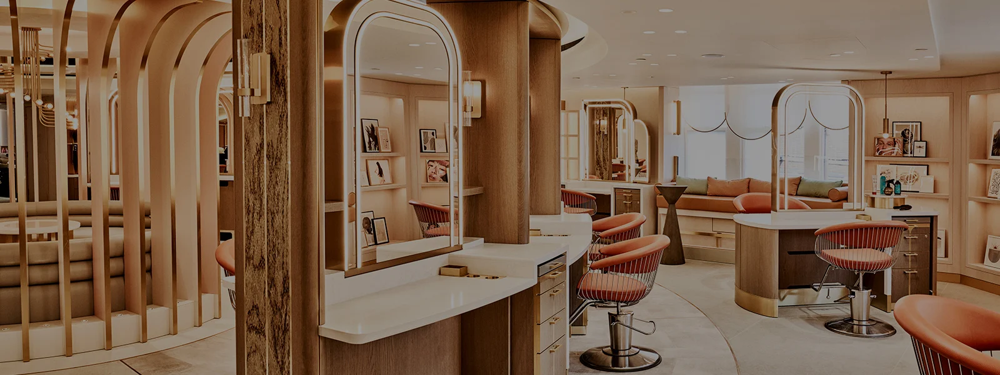

Elegance Unveiled Beauty Salon
- Step into the enchanting realm of a beauty salon, where artistry and self-care converge in
a symphony of transformation. Beyond the mirrors and scissors lies a sanctuary dedicated
to enhancing not just appearances but nurturing the soul. Skilled stylists, with their
expert hands, sculpt hairstyles that reflect personal expression. Aestheticians craft tailored
skincare rituals, while nail technicians turn fingertips into miniature canvases of creativity.
Modern beauty salons extend beyond the surface, offering wellness services that weave mindfulness
into the experience. In this haven, clients find more than a change in looks; they discover a
celebration of individuality and a profound journey of self-discovery. The beauty salon becomes a
tapestry where art and self-care intertwine,
creating a timeless space for rejuvenation and the pursuit of embracing one's unique beauty
.
Nail Artistry in Miniature
- Aestheticians craft tailored skincare rituals, ensuring each treatment addresses individual
concerns and enhances natural beauty.
Wellness Infused Pampering
- Modern beauty salons extend beyond the surface, offering
wellness services that weave mindfulness into the experience.
Embracing Individuality
- In this tapestry of art and self-care, clients find more than a change in looks;
they discover a celebration of individuality and a profound journey of self-discovery.
The beauty salon becomes a timeless
space for rejuvenation and the pursuit of embracing one's unique beauty.
Visit this WEBSITE
Dribbble Salon